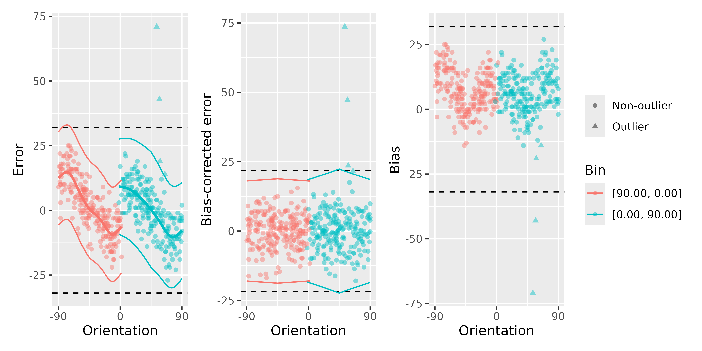
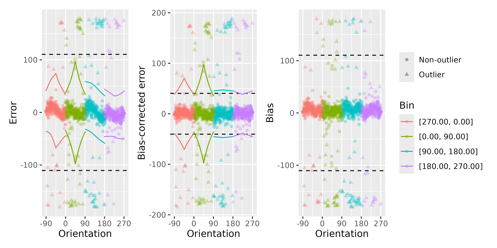
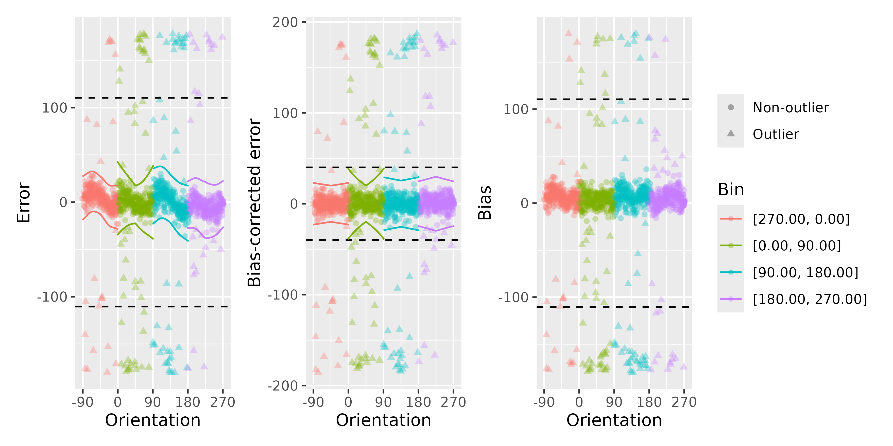
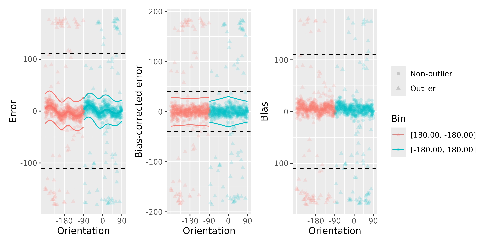

Remove cardinal biases
Usage
remove_cardinal_biases(
err,
x,
space = "180",
bias_type = "fit",
plots = "hide",
poly_deg = 4,
var_sigma = TRUE,
var_sigma_poly_deg = 4,
reassign_at_boundaries = TRUE,
reassign_range = 2,
break_points = NULL,
init_outliers = NULL,
debug = FALSE,
do_plots = NULL
)Arguments
- err
a vector of errors, deviations of response from the true stimuli
- x
a vector of true stimuli in degrees (see space)
- space
circular space to use (a string:
180or360)- bias_type
bias type to use (
fit,card,obl, orcustom, see details)- plots
a string
hide,show, orreturnto hide, show, or return plots (default:hide)- poly_deg
degree of the fitted polynomials for each bin (default: 4)
- var_sigma
allow standard deviation (width) of the fitted response distribution to vary as a function of distance to the nearest cardinal (default: True)
- var_sigma_poly_deg
degree of the fitted polynomials for each bin for the first approximation for the response distribution to select the best fitting model (default: 4)
- reassign_at_boundaries
select the bin for the observations at the boundaries between bins based on the best-fitting polynomial (default: True)
- reassign_range
maximum distance to the boundary at which reassignment can occur (default: 2 degrees)
- break_points
can be used to assign custom break points instead of cardinal/oblique ones with
bias_typeset tocustom(default: NULL)- init_outliers
a vector determining which errors are initially assumed to be outliers (default: NULL)
- debug
print some extra info (default: False)
- do_plots
deprecated, use the parameter
plotsinstead
Value
If plots=='return', returns the three plots showing the biases
(combined together with patchwork::wrap_plots()). Otherwise, returns a list with the following elements:
is_outlier - 0 for outliers (defined as
±3*pred_sigmafor the model with varying sigma or as±3\*SDfor the simple model)pred predicted error
be_c error corrected for biases (
be_c = observed error - pred)which_bin the numeric ID of the bin that the stimulus belong to
bias the bias computed as described above
bias_typ bias type (cardinal or oblique)
pred_lin predicted error for a simple linear model for comparison
pred_sigma predicted SD of the error distribution
coef_sigma_int, coef_sigma_slope intercept and slope for the sigma prediction
Details
If the bias_type is set to fit, the function computes the cardinal biases in the following way:
Create two sets of bins, splitting the stimuli vector into bins centered at cardinal and at oblique directions.
For each set of bins, fit a penalised spline (P-spline — a regression spline with a roughness penalty that controls smoothness) for the mean response in each bin. Optionally (see
var_sigma), the response variability (SD) is modelled jointly via a log-linear model, allowing the response distribution to vary in width as a function of distance to the nearest cardinal (regardless of whether the bins are centered at the cardinal or at the oblique, the width of the response distribution usually increases as the distance to cardinals increases).Choose the best-fitting model between the one using cardinal and the one using oblique bins.
Optionally (see
reassign_at_boundaries), reassign observations near bin boundaries to the bin whose fitted model best describes them, iterating until convergence.Compute the residuals of the best-fitting model - that's your bias-corrected error - and the biases (see below).
The bias is computed by flipping the sign of errors when the average predicted error is negative, so, that, for example, if on average the responses are shifted clockwise relative to the true values, the trial-by-trial error would count as bias when it is also shifted clockwise.
If bias_type is set to obl or card, only one set of bins is used, centred at cardinal or oblique angles, respectively.
For additional examples see the help vignette:
vignette("cardinal_biases", package = "circhelp")
References
Chetverikov, A., & Jehee, J. F. M. (2023). Motion direction is represented as a bimodal probability distribution in the human visual cortex. Nature Communications, 14(7634). doi:10.1038/s41467-023-43251-w
van Bergen, R. S., Ma, W. J., Pratte, M. S., & Jehee, J. F. M. (2015). Sensory uncertainty decoded from visual cortex predicts behavior. Nature Neuroscience, 18(12), 1728-1730. doi:10.1038/nn.4150
Examples
# Data in orientation domain from Pascucci et al. (2019, PLOS Bio),
# https://doi.org/10.5281/zenodo.2544946
ex_data <- Pascucci_et_al_2019_data[observer == 4, ]
remove_cardinal_biases(ex_data$err, ex_data$orientation, plots = "show")
#> Warning: Using `size` aesthetic for lines was deprecated in ggplot2 3.4.0.
#> ℹ Please use `linewidth` instead.
#> ℹ The deprecated feature was likely used in the circhelp package.
#> Please report the issue at <https://github.com/achetverikov/circhelp/issues>.

#> is_outlier pred be_c which_bin bias bias_type pred_lin
#> <num> <num> <num> <num> <num> <char> <num>
#> 1: 0 7.9230809 -4.9230809 2 3 obl 7.7417971
#> 2: 0 -0.1308869 1.1308869 2 -1 obl -0.3993174
#> 3: 0 1.2207397 -4.2207397 2 -3 obl 0.6511490
#> 4: 0 -8.7810545 10.7810545 1 -2 obl -9.8423470
#> 5: 0 -8.6971298 0.6971298 2 8 obl -6.1768825
#> ---
#> 436: 0 -2.1183663 1.1183663 1 1 obl -1.2501447
#> 437: 0 -8.6739185 -10.3260815 2 19 obl -11.1665978
#> 438: 1 -7.5717292 21.5717292 2 -14 obl -5.3890327
#> 439: 0 1.5454955 -2.5454955 2 -1 obl 0.9137656
#> 440: 0 -1.5454975 0.5454975 2 1 obl -1.4497838
#> pred_sigma coef_sigma_int coef_sigma_slope shifted_x total_log_lik
#> <num> <num> <num> <num> <num>
#> 1: 6.581720 2.008408 -0.0041370562 15 -1439.084
#> 2: 7.420680 2.008408 -0.0041370562 46 -1439.084
#> 3: 7.359534 2.008408 -0.0041370562 42 -1439.084
#> 4: 6.048084 1.835115 -0.0009308876 -7 -1439.084
#> 5: 6.775109 2.008408 -0.0041370562 68 -1439.084
#> ---
#> 436: 6.202023 1.835115 -0.0009308876 -34 -1439.084
#> 437: 6.262951 2.008408 -0.0041370562 87 -1439.084
#> 438: 6.859720 2.008408 -0.0041370562 65 -1439.084
#> 439: 7.329150 2.008408 -0.0041370562 41 -1439.084
#> 440: 7.298892 2.008408 -0.0041370562 50 -1439.084
# Data in motion domain from Bae & Luck (2018, Neuroimage),
# https://osf.io/2h6w9/
ex_data_bae <- Bae_Luck_2018_data[subject_Num == unique(subject_Num)[5], ]
remove_cardinal_biases(ex_data_bae$err, ex_data_bae$TargetDirection,
space = "360", plots = "show"
)

#> is_outlier pred be_c which_bin bias bias_type
#> <num> <num> <num> <num> <num> <char>
#> 1: 1 -8.1646660 177.564666 4 -169.40 obl
#> 2: 0 -4.2762025 -1.723797 4 6.00 obl
#> 3: 1 -1.5395997 179.089600 4 -177.55 obl
#> 4: 0 -8.1232918 -32.876708 4 41.00 obl
#> 5: 1 -12.6232487 -162.326751 3 174.95 obl
#> ---
#> 1276: 0 -3.4667917 -2.533208 3 6.00 obl
#> 1277: 0 -0.8563063 2.856306 2 -2.00 obl
#> 1278: 0 -1.2850314 -12.014969 2 13.30 obl
#> 1279: 0 -2.4856169 9.485617 4 -7.00 obl
#> 1280: 1 5.4602303 -181.660230 1 -176.20 obl
#> pred_lin pred_sigma coef_sigma_int coef_sigma_slope shifted_x
#> <num> <num> <num> <num> <num>
#> 1: -4.9493375 13.30662 2.557849 0.0033792059 234.0
#> 2: -3.4904611 13.71753 2.557849 0.0033792059 207.0
#> 3: -2.3017470 14.77619 2.557849 0.0033792059 185.0
#> 4: -5.5977270 13.85730 2.557849 0.0033792059 246.0
#> 5: -10.0644723 15.12133 2.757727 -0.0009679155 178.0
#> ---
#> 1276: -3.1784946 15.50670 2.757727 -0.0009679155 152.0
#> 1277: -0.9756321 27.84874 3.482640 -0.0219510746 52.1
#> 1278: -2.8733208 13.37814 3.482640 -0.0219510746 85.5
#> 1279: -2.7340066 14.38209 2.557849 0.0033792059 193.0
#> 1280: 10.9248285 14.05594 3.162049 -0.0133077997 -84.0
#> total_log_lik
#> <num>
#> 1: -4999.398
#> 2: -4999.398
#> 3: -4999.398
#> 4: -4999.398
#> 5: -4999.398
#> ---
#> 1276: -4999.398
#> 1277: -4999.398
#> 1278: -4999.398
#> 1279: -4999.398
#> 1280: -4999.398
# Using a stricter initial outlier boundary
remove_cardinal_biases(ex_data_bae$err, ex_data_bae$TargetDirection,
space = "360", plots = "show",
init_outliers = abs(ex_data_bae$err) > 60
)

#> is_outlier pred be_c which_bin bias bias_type pred_lin
#> <num> <num> <num> <num> <num> <char> <num>
#> 1: 1 -9.113895 178.513895 4 -169.40 obl -4.710449
#> 2: 0 -2.806114 -3.193886 4 6.00 obl -3.476563
#> 3: 1 -2.095136 179.645136 4 -177.55 obl -2.471175
#> 4: 1 -8.951365 -32.048635 4 41.00 obl -5.258842
#> 5: 1 -11.246276 -163.703724 3 174.95 obl -9.952609
#> ---
#> 1276: 0 -4.298265 -1.701735 3 6.00 obl -3.147991
#> 1277: 0 -3.551758 5.551758 2 -2.00 obl -1.006986
#> 1278: 0 -1.310356 -11.989644 2 13.30 obl -3.046211
#> 1279: 0 -1.224429 8.224429 4 -7.00 obl -2.836771
#> 1280: 1 6.493429 -182.693429 1 -176.20 obl 11.762122
#> pred_sigma coef_sigma_int coef_sigma_slope shifted_x total_log_lik
#> <num> <num> <num> <num> <num>
#> 1: 9.564013 2.296177 -0.004241024 234.0 -4106.562
#> 2: 9.205842 2.296177 -0.004241024 207.0 -4106.562
#> 3: 8.385766 2.296177 -0.004241024 185.0 -4106.562
#> 4: 9.089457 2.296177 -0.004241024 246.0 -4106.562
#> 5: 9.673380 2.138472 0.003044326 178.0 -4106.562
#> ---
#> 1276: 8.937226 2.138472 0.003044326 152.0 -4106.562
#> 1277: 7.360064 1.893307 0.014473517 52.1 -4106.562
#> 1278: 11.935106 1.893307 0.014473517 85.5 -4106.562
#> 1279: 8.675161 2.296177 -0.004241024 193.0 -4106.562
#> 1280: 7.508732 1.892340 0.003172481 -84.0 -4106.562
# We can also use just one bin by setting `bias_type` to custom
# and setting the `break_points` at the ends of the range for x
remove_cardinal_biases(ex_data_bae$err, ex_data_bae$TargetDirection,
space = "360", bias_type = "custom",
break_points = c(-180, 180), plots = "show",
reassign_at_boundaries = FALSE, poly_deg = 8,
init_outliers = abs(ex_data_bae$err) > 60
)

#> is_outlier pred be_c which_bin bias bias_type pred_lin
#> <num> <num> <num> <num> <num> <char> <num>
#> 1: 1 -9.2030302 178.603030 1 -169.40 custom -5.8597966
#> 2: 0 -2.4089091 -3.591091 1 6.00 custom -3.7074843
#> 3: 1 -4.4010319 181.951032 1 -177.55 custom -1.9537483
#> 4: 1 -8.9675585 -32.032442 1 41.00 custom -6.8163798
#> 5: 1 -7.1464430 -167.803557 1 174.95 custom -1.3957414
#> ---
#> 1276: 0 -4.8169178 -1.183082 1 6.00 custom 0.6768557
#> 1277: 0 -3.8499780 5.849978 2 -2.00 custom -1.9815001
#> 1278: 0 -0.4033573 -12.896643 2 13.30 custom -4.1328108
#> 1279: 0 -1.5736819 8.573682 1 -7.00 custom -2.5914705
#> 1280: 1 5.4087387 -181.608739 2 -176.20 custom 6.7847691
#> pred_sigma coef_sigma_int coef_sigma_slope shifted_x total_log_lik
#> <num> <num> <num> <num> <num>
#> 1: 9.202199 2.156542 0.001164823 -126.0 -4127.197
#> 2: 8.917292 2.156542 0.001164823 -153.0 -4127.197
#> 3: 8.691679 2.156542 0.001164823 -175.0 -4127.197
#> 4: 9.331729 2.156542 0.001164823 -114.0 -4127.197
#> 5: 8.661359 2.156542 0.001164823 -182.0 -4127.197
#> ---
#> 1276: 8.927685 2.156542 0.001164823 -208.0 -4127.197
#> 1277: 8.088014 2.315133 -0.004313822 52.1 -4127.197
#> 1278: 7.002740 2.315133 -0.004313822 85.5 -4127.197
#> 1279: 8.773052 2.156542 0.001164823 -167.0 -4127.197
#> 1280: 7.048200 2.315133 -0.004313822 -84.0 -4127.197